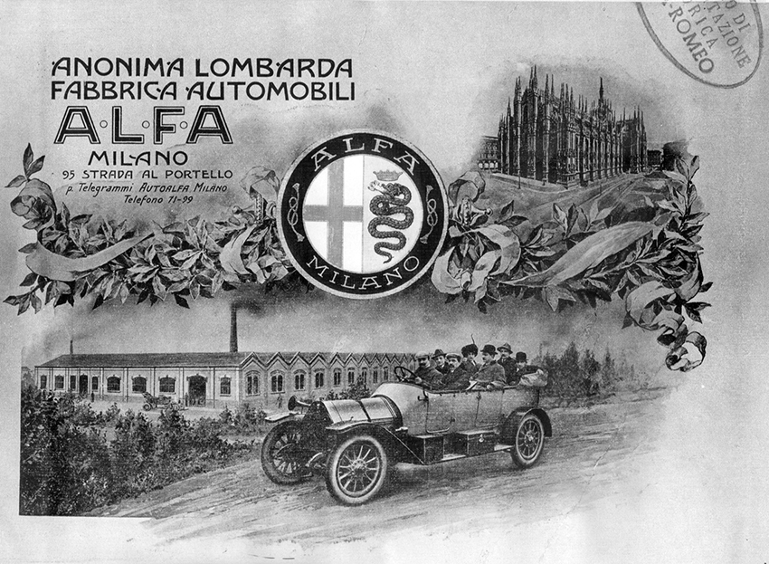

1910
El aristócrata italiano Ugo Stella adquiere las participaciones de la Società Italiana Automobili Darracq, fundada en 1906 y localizada en la Strada del Portello número 95 en Milan. El 24 de junio de 1910, Stella relanza la fabica y la renombra como Anonima Lombarda Fabbrica Automobili – A.L.F.A. or “Alfa”.
